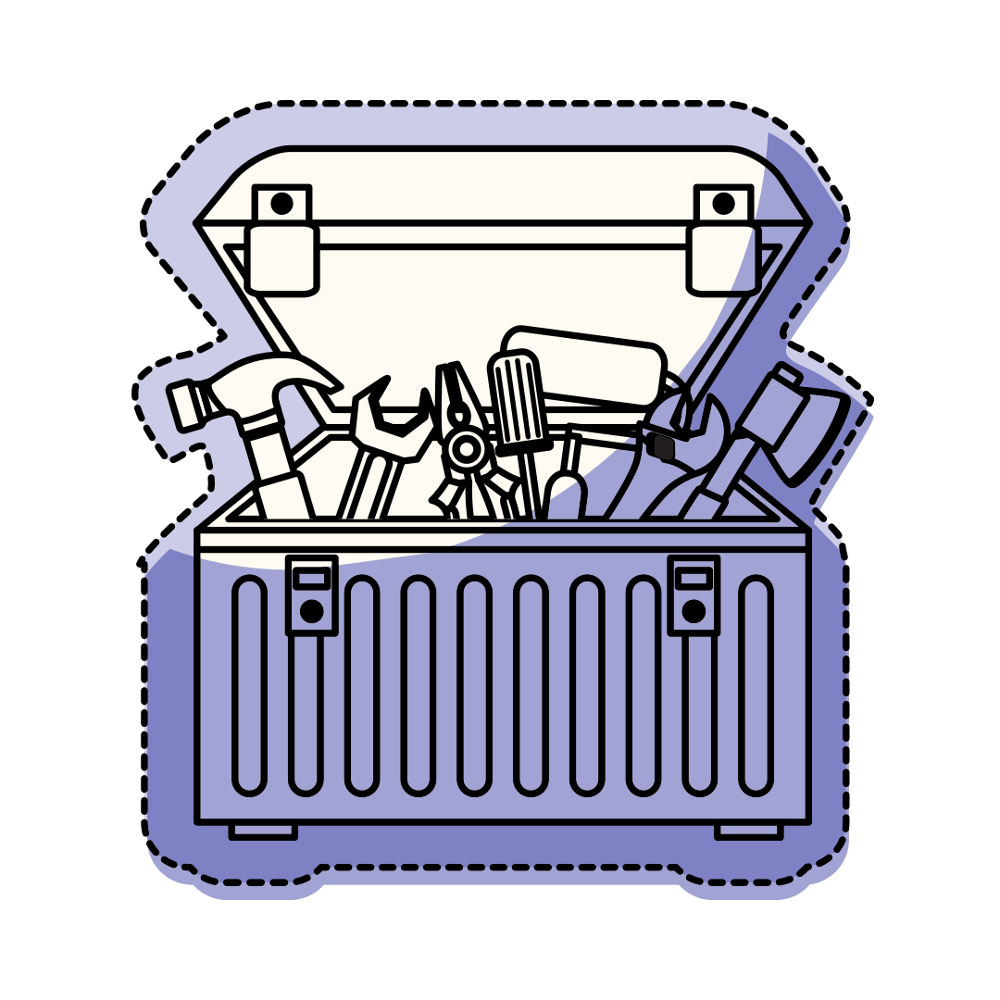
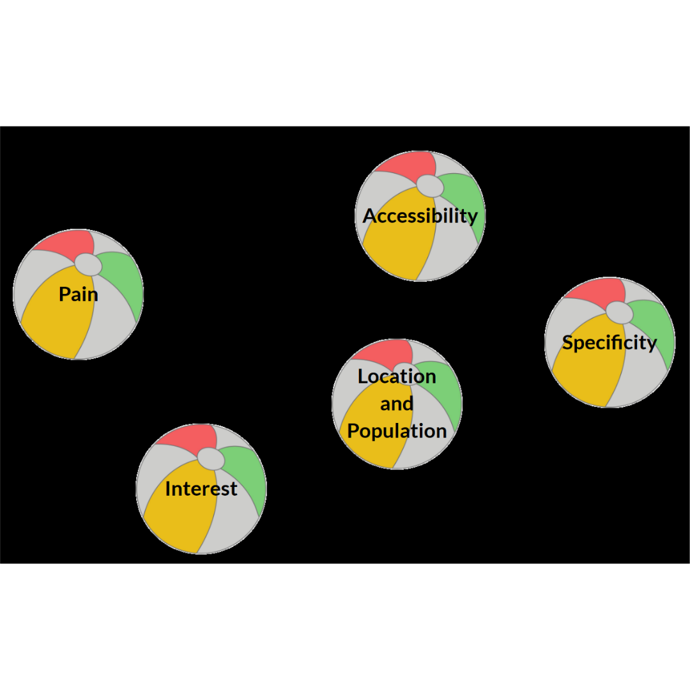
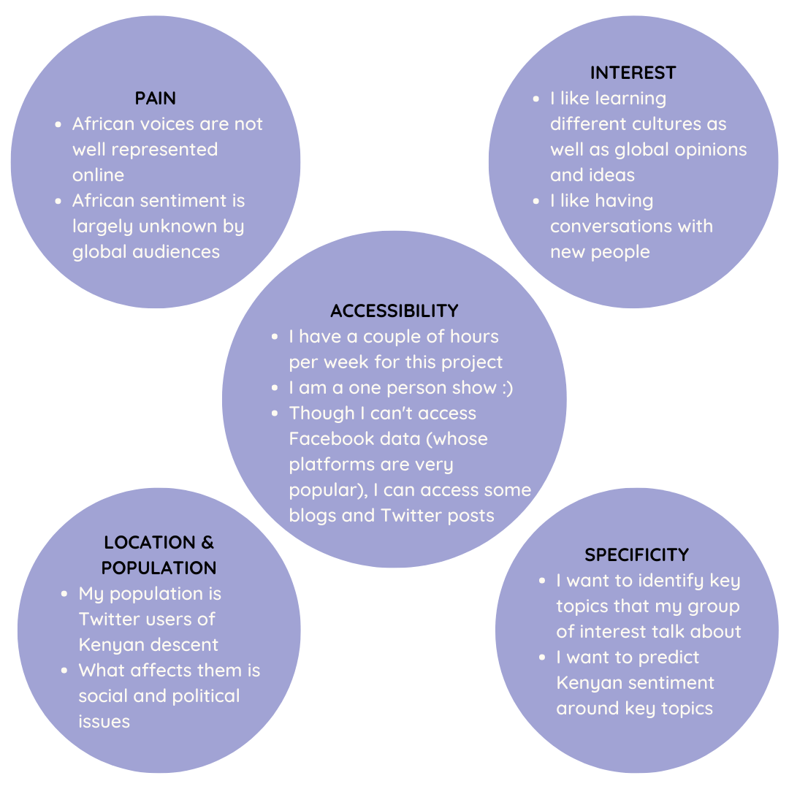
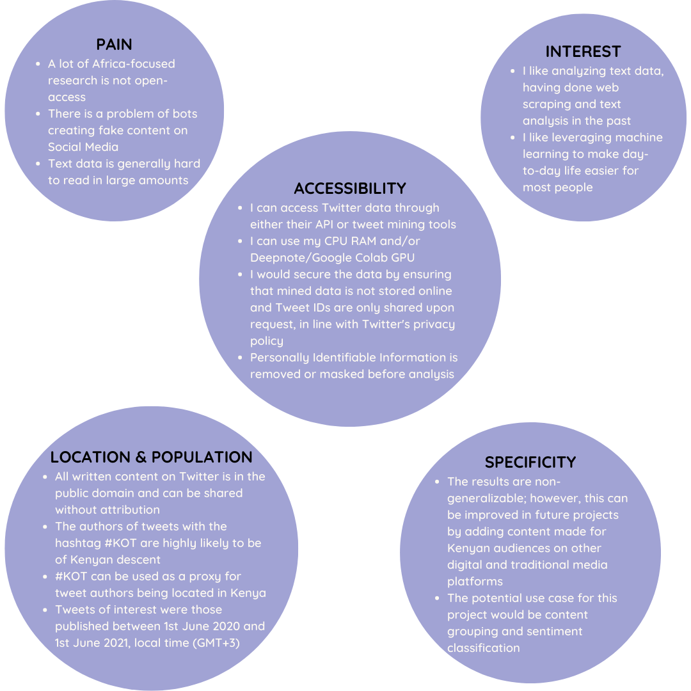
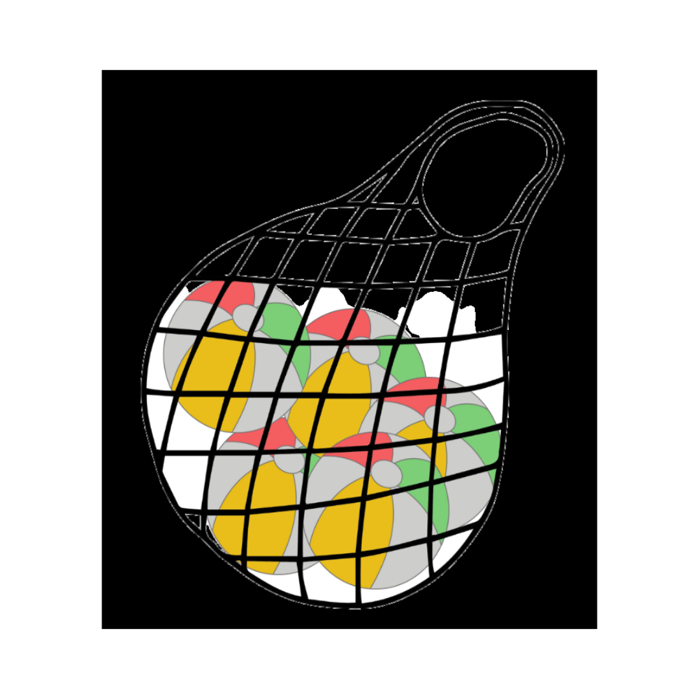

ML/Data Science article 3
Contents
ML/Data Science article 3#
Delivering Success in Natural Language Processing Projects: Part Two#
Publisher: Medium
Publishing Date: Aug 3, 2022

The metaphorical toolbox in all its glory…
This is the second post of a five-part series where I aim to demystify Natural Language Processing (NLP) through a key learning tool that I would call the NLP toolbox. You can access the previous article here.
A quick recap:
Though algorithms are increasingly controlling our day-to-day, only a few people can create and/or understand them.
Mental scaffolding is useful to help more people understand algorithms and manage technical projects.
The NLP toolbox can help us manage NLP projects and map out NLP concepts that we need to understand in order to fairly assess these projects.
The NLP toolbox is a collection of concepts, tools and ideas available for building applications that can handle real-world challenges around understanding content from all over the world.
The scientific research method is a classic go-to for structuring any research project, while the CRISPR-DM framework helps data scientists bring their projects to life. The NLP toolbox is meant to help strike the delicate balance between
taking the time to deeply study a phenomenon and
rapidly skim through relevant work
in order to apply scientific findings to the fast-paced world of business, adapted to rapidly changing consumer needs and wants.
There are therefore 4 stages in the research process where we can apply the NLP toolbox:
Problem Definition
Data Exploration
Feature Engineering
Model Fitting and Evaluation
Problem Definition#
Imagine dealing with a whole bunch of bouncy beach balls like these ones that have to be put in a net for storage:

All the bouncy beach balls that you have to catch.
That’s how it can feel sometimes identifying a problem that can be solved through NLP. We have to consider these 5 elements and combine them well:
Pain
Accessibility
Specificity
Interest
Location and Population
Round 1 of Questions#
To start off, reflect on the questions under each element below and write down your initial and/or gut responses;
Pain
What annoys you in your day-to-day life (e.g. at work, home, school or leisure)?
What do you think is humanity’s biggest source of pain?
Interest
What do you like reading or listening to?
What are you curious about?
Accessibility
What time constraints do you have?
How many people can you team up with to do a work/home/school/leisure project?
What resources (articles, newsletters, audio, video, ebooks) to you have access to that are crowding your computer or inbox?
Location and Population
What group of people, plants, animals or things do you enjoy learning about and discussing?
Where is this kind of group located?
What affects this group the most?
Specificity
What small area out of your answers from the other 4 elements would you like to concentrate on?
Would it be worth the cost and effort finding a solution to the area of your study?
How much scope within your problem area would you like to cover?
Once you are done with these questions and you have some answers outlining a real-world problem, check if your project idea (the collection of your answers) could have solid answers to the following round of questions:
Round 2 of Questions#
Pain
Is the data source for your project idea consisting of complex data types (i.e. waveforms, images, text)?
Is your data stored in an unstructured manner, hard to summarize with traditional summary statistics (number of groups, mean, mode, median etc.)
Is your data too big to read? Watch? Listen to?
Interest
Do you enjoy consuming loads of content both on and off the Internet?
Do you enjoy listening to differing ideologies, philosophies and opinions in particular areas (e.g. sports, politics, religion etc.)
Accessibility
Do you have legal permission and subject consent to access the data that you are interested in collecting?
Do you have enough computational resources to handle the data needed to bring your project idea to life?
Is your data anonymized to protect subject privacy and minimize researcher bias?
Location and Population
Do you have creator(s) consent for fair use?
Where is the creator(s) located (e.g. they are located in a jurisdiction where there is strict data protection)?
What group(s) does the data subject belong to and is it connected to the group(s) that you would wish to study?
Specificity
Are you seeking generalized results to the real world (if so, NLP may not be for you — we are still far away from zero-shot machine learning)?
What use cases do you have in mind where your project idea would apply?
By the end of round two, you should have something resembling a rough summary of your project idea.
How would the Problem Solving process apply to a real-life example?#
I had just started my Delta Analytics fellowship and I needed to quickly come up with a compelling project idea.
Mapping everything onto the real world resulted in these Round 1 answers:

Real world answers
and these Round 2 answers:

NLP specific answers
The result?
I did background research on social media trends in Kenya and defined Kenyans on Twitter as follows:
Kenyans on Twitter is a decentralized group of Kenyans that use the hashtag #KOT to organize and mobilize around political and socio-cultural issues both within Kenya and outside her borders.
The abstract that I submitted for my project:
Kenya is a linguistically diverse country with over 40+ languages, but current NLP solutions serving her inhabitants do not capture this linguistic diversity. Furthermore, many Kenyans code-switch, particularly in informal settings and this requires a fresh approach to conducting NLP tasks on data generated by Kenyans.
The aim of this project is therefore to build a Natural Language Processing Solution for multilingual, code-switching cultures, using sentiment analysis on Kenyan social media as a use case. The data used was all tweets containing #KOT written during 1st June 2020–1st June 2021; #KOT is a hashtag that Kenyans on Twitter typically use to identify themselves. A problem-solving and project management framework, the NLP toolbox, was used to come up with this solution.
The first paragraph described real-world attributes of the problem, while the second paragraph described technical attributes of the problem.
Problem in the bag!

Join me on the next article where we dig into our metaphorical toolbox once more.